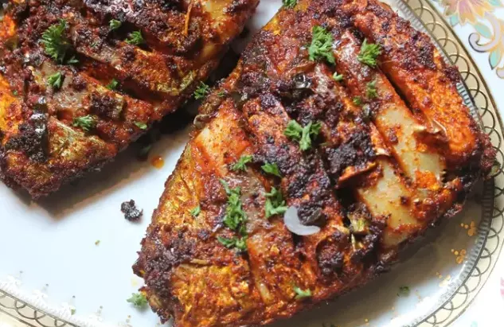

TAWA FISH FRY RECIPE

DESCRIPTION
A fish fry is a fried fish meal that is battered or breaded. French fries, coleslaw, hushpuppies, lemon slices, tartar sauce, hot sauce, malt vinegar, and dessert are usually included. Some Native American recipes call for coating the fish with semolina and egg yolk.
In many Indian kitchens, a tava or tawa is a common frying pan. The pan, also known as a tawah, thawah, or thavah, is round and ranges in diameter from 8 to 12 inches. In some professional kitchens, it can be up to a meter wide. Tawa Fish Fry is a delicious, flavoured shallow fried seafood meal made with a few basic spices and herbs and cooked on a flat pan.
INGREDIENTS
- Fish - 3 I used paarai fish
- Coconut Oil - 4 to 5 tblspn
For Marination:
- Chilli Powder - 1 tblspn
- Kashmiri Chilli Powder - 2 tblspn
- Turmeric Powder / Manjal Podi - 1 tsp
- Coriander Powder - 1.5 tblspn
- Pepper Powder - 2 tsp
- Ginger Garlic Paste - 1 tblspn
- Garam Masala Powder - 1 tsp
- Coriander Leaves - 2 tblspn finely chopped
- Curry leaves - 2 tblspn finely chopped
- Lemon Juice - 1 tblspn
- Water as needed
- Salt to taste
COOKING STEPS
- Clean fish pieces, make deep slashes in it.
- Mix all the ingredients for marination and add very little water and make it into a thick paste.
- Apply masala all over the fish, deep into the slits and slashes.
- Leave this to marinate for 30 mins.
- Heat coconut oil in a pan, place fish over it. Cover it and cook on a medium low heat for 5 to 6 mins.
- Now flip over and cook on high heat for 5 more mins.
- Now the fish is done. Serve with lemon wedges and onion rings.
CONTENT SOURCES
- The contents including picture, description, ingredients, making steps and any other contents are all taken from this link, TAWA FISH FRY.
- The recipe of Tawa Fish Fry is belongs to AARTHI SATHEESH.
- She is a food blogger, food photographer, recipe creator and youtuber.
- She is hosting a website, YUMMYTUMMYAARTHI.COM, and is sharing her tasteful food recipes from this website.
- You can look at full recipe detail from this link, TAWA FISH FRY.